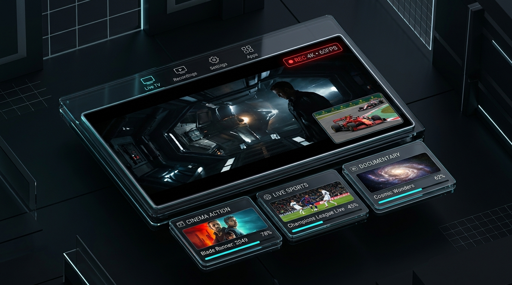

PÜSÜ
.
IPTV
Arayüz
Stüdyo
Destek
Kahve
Facebook
Telegram
Google Play
QR Girişi
Win 19.3
Aydınlık
4K Medya Stüdyosu.
QR ile Anında Yayında.
PÜSÜ IPTV // KARŞILAMA EKRANI
AKTİF
01 // ARAYÜZ
Çift Tema. Tam Ekran Deneyim.
MAT SİYAH // KARANLIK TEMA
WINDOWS & TV
4K STÜDYO // TV & MOBİL SENKRON
ANDROID TV & PC
02 // DONANIM
4K Kayıt. Canlı EPG. Bulut Senkron.

REC 4K • 60 FPS
00:14:28
PIP ÇİFT EKRAN
GPU DONANIM MOTORU
4K Yayın Kaydı & Anlık Kare Yakalama
CANLI EPG AKIŞI
● CANLI
SPOR 4K
20:45
Şampiyonlar Ligi Finali
SİNEMA
23:15
Oppenheimer (IMAX 4K)
Hatırlatıcı Aktif
BELGESEL
Dolby 4K
Kozmik Harikalar
Sınırsız Xtream & M3U Hesabı
.pusu Cihazlar Arası Bulut Yedek
Android TV Kumanda Odak Hafızası
03 // EKOSİSTEM
Destek & Uygulamalar.
MASKOTUMUZ
Püskül
BAĞIMSIZ GELİŞTİRİCİ DESTEĞİ
Kahve Ismarla ☕
Tümü
☕
Küçük
150 TL
☕☕
Orta
300 TL
☕☕☕
Büyük
450 TL
MASAÜSTÜ YAZILIM ARŞİVİ
Diğer Uygulamalar
WINDOWS .EXE
Kelime Avcısı
Dil Hazinesi
Okul707